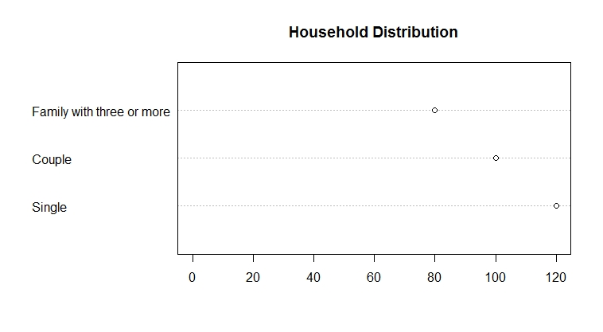

Construct Dot Charts
Introduction
A dot chart shows the number of counts for each category using dots. Typically, the horizontal axis shows the categories, and the vertical axis shows the number of counts. A dot chart usually shows the total number of individuals in each group.
Knowledge
The R function of creating a dot chart is
dotchart(x, labels=NULL, groups=NULL, gdata=NULL, cex=par(“cex”), pt.cex=cex, pch=21, gpch=21, bg=par(“bg”), color=par(“fg”), gcolor=par(“fg”), lcolor=”gray”, xlim, main= NULL, xlab=NULL, ylab=NULL)
The arguments are:
x: a vector or matrix of values of the data
labels: a vector of labels for each point
groups: an optional factor indicating how the elements of x are grouped
gdata: data values for the groups
cex: the character size to be used
pt.cex: the cex to be applied to plooting symbols.
pch: the plotting character or symbol to be used
gpch: the plotting character or symbol to be used for group values
bg: the background color of plotting characters or symbols to be used
color: the color(s) to be used for points and labels
gcolor: the single color to be used for group labels and values
lcolor: the color to be used for the horizontal lines
xlim: horizontal range for the plot
main: title for the plot
xlab: axis label for the x-axis
ylab: axis label for the y-axis
Key Points to Remember
A dot chart shows the frequencies for each category of a categorical variable. The R function is dotchart().
When creating a dot plot, we need to make sure the horizontal axis starts from 0 using xlim=c(0, ). A common deceptive graph is a graph with the axis scale starting at some value greater than zero that exaggerates the differences between categories.
Practice and Reflection
Practice
Example 1: A survey records the number of households in each of the following category: single, couple, family of three or more. The data is shown in the table below:
| Type of family | Number of households |
|---|---|
| Single | 120 |
| Couple | 100 |
| Family of three or more | 80 |
Generate a dot plot
The R code is

The dot chart is shown in figure 2 below

Figure 2. Dot chart of the household distribution.
The horizontal axis shows the frequencies for each type of family, and the vertical axis shows the three categories of the variable, type of family.
Reflection
Activity 1: The table below records the color of 20 M&M candies. Generate a table to show the number of candies for each color, and then generate a dot chart to represent the data by counts.
| red | red | yellow | yellow | yellow | red | black | blue | blue | red |
| orange | black | yellow | blue | black | orange | yellow | black | red | orange |
Assessments
The dataset below shows the hair color of ten girls, generate a dot chart to show the frequency of hair color. Show the labels of x- and y-axis and title of the graph.
| Brown | Black | Black | Blond | Blond | Brown | Blond | Blond | Blond | Red |
Using the following data set of paint color shown in a painting competition to generate a dot plot showing the frequencies of each color. Label the x-axis as Counts and y-axis Color. Use the solid dots (pch=16), and color the dots the same as the label. For example, a red point should be colored as red.
| yellow | grey | red | blue | green | black | grey | red | red | black |
| black | black | green | blue | blue | black | yellow | grey | black | grey |